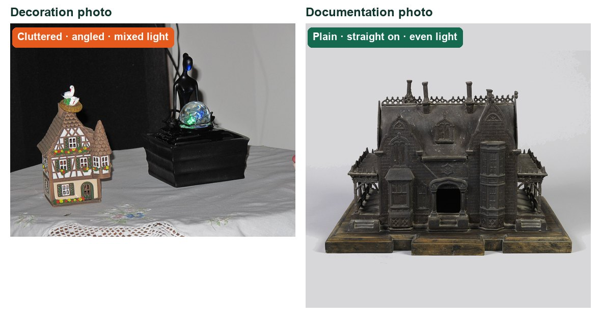
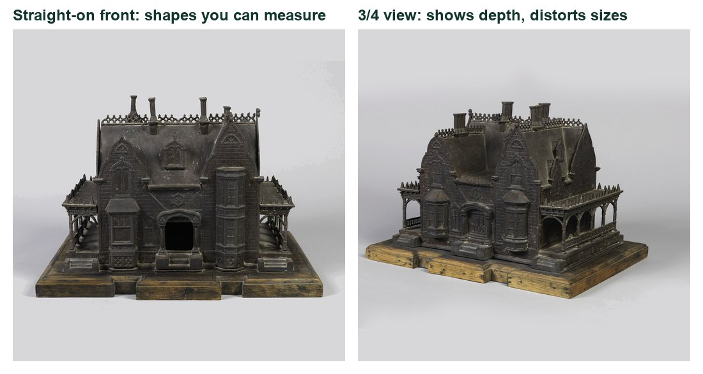
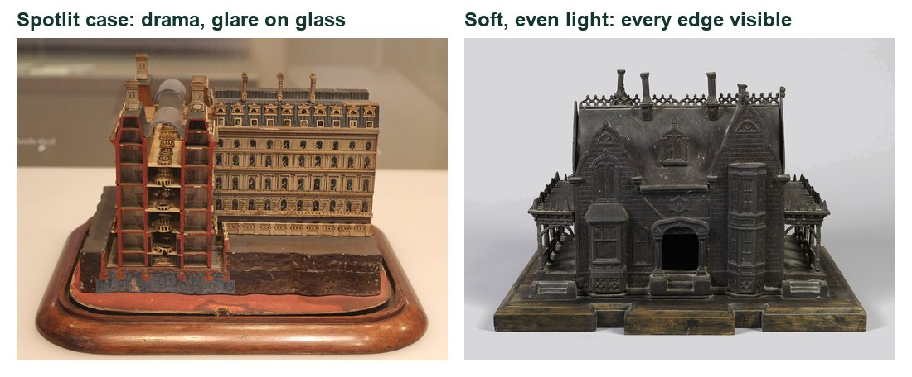
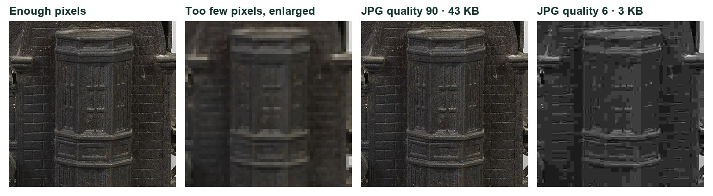
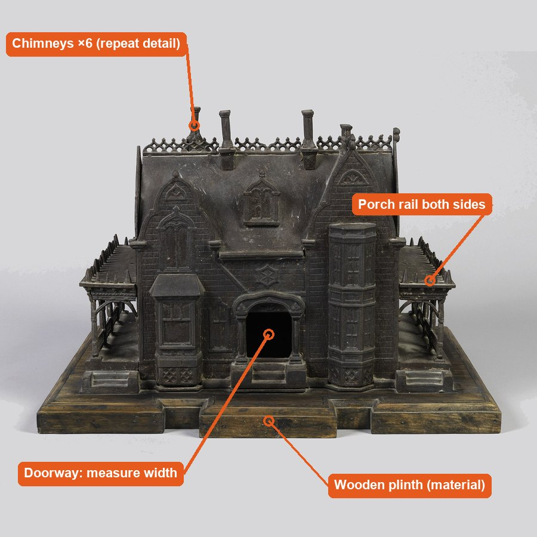

Target: a reference sheet like this, made from YOUR photos of YOUR village object (example uses museum photos; credits in Sources).
Accurate beats dramatic.
Six sessions: kit, views and light, exports, a making sequence, an independent challenge, and a labelled handover for Sprint 4.
My supports
Turn on any help you want. Your teacher may have set some for you. They change how the guide helps, not what is assessed.
Your production brief
Your photos are the modeller’s only reference.
In Sprint 4 your group builds digital models and technical drawings of the village. They will work from your photographs. Your job is to capture your object so its shape, size and construction can be read without you in the room.
You will hand in
Photo Desk licence (Level 1 or higher)
Settings card and contact sheet
Front, side, top and detail views with scale
Two exports (web and print) with reasons
A making sequence
Practical check photos and explanation
Reference sheet + handover folder
Time
Nine 70-minute lessons, 5–16 October (plan dates; Monday 12 October is Thanksgiving).
Help
Use the Learning Studio Coach to clarify a term in guided steps. Not during the practical check.
Knowledge + Reflection Form: your teacher will open it after the practical check (lesson 7).
Industry connection
Museums, manufacturers and architects all photograph this way.
The reference sheet above uses real museum documentation photos of a model building from about 1868 (Cooper Hewitt, Smithsonian Design Museum). R1 Museum photographers use a plain background, soft even light and consistent camera positions so researchers can study an object they cannot touch.
Notice: the same background in every view; no deep shadows; the front view is straight on; a close detail shows construction.
The professional problem
Client: your Sprint 4 modelling team · User: someone who has never seen your object · Question: Can they measure and rebuild it from your photos alone?
Knowledge first
What makes a photo measurable?
1 · Sharp all the way through
A larger f-number (f/11) keeps more of the object in focus from front to back. It lets in less light, so the shutter slows down: that is why documentation uses a tripod.
2 · Straight-on views keep proportions true
A camera square to the surface, from a moderate distance, keeps shapes and sizes honest. Close, low or angled views make near parts look bigger.
3 · Scale makes size readable
A ruler or object of known size in the frame, in focus, lets anyone measure from the photo.
4 · Even light shows every edge
Soft light from both sides removes shadows that hide joints and openings. Hard light is for showing texture in a detail shot, on purpose.
5 · The file must fit the job
Screens need modest pixel sizes and small files. Print needs enough pixels: pixels ÷ ppi = inches. Too much JPG compression destroys detail.
6 · Your own capture is the evidence
Editing someone else’s photo does not show you can use a camera and tripod. Every evidence photo must be your original.
What this project assesses
Skills you will show.
Skill (registered ID)
Where you show it
Camera capture · PS-CAM-01
Photo Desk (safe routine, tripod, Job 01), then steps 3–7 and 10–11
Output · PS-OUT-01
Steps 8–9 and 14
Layers, type and transforms · PS-LAY-01, PS-TYP-01, PS-TRN-01
Step 13
Audience and hierarchy · GD-AUD-01, GD-HIE-01
Steps 1 and 13
Foundations and adjustments · PS-FND-01, PS-ADJ-01, PS-TON-01, PS-BRS-01
Steps 8 and 13 (only where needed)
Primary achievement evidence: the practical check (lesson 7, com11-26-s03-d07) plus original capture and a safe camera/tripod observation. Guided steps are practice; supports are recorded separately.
Observation: each learner operates the camera and tripod safely and changes one capture variable. Conversation: “Why is this capture or format suitable for documentation rather than simply attractive?”
You decide what your photos must show, confirm your Photo Desk licence, and take a baseline to improve on.
TODAYName the job, confirm your licence and take a baseline photo.
01
Know what documentation photography is for
IN SHORTDecide who will use your photos and what they must be able to measure.
READ ALOUD
DOCUMENT: Your village object (from Sprint 2) SELECT: The reference sheet at the top of this guide TOOLS / ROUTE: Read · compare · decide
Look at the reference sheet in the header: a front view, a 3/4 view and a detail, all on a plain background with even light.
Choose the village object you will document this sprint (a sign, a building part, a prop).
Write the job in your log: who will use these photos (the modeller in Sprint 4) and what they must be able to measure or copy.
List three things your photos must show: overall shape, one construction detail, and scale.
Create a folder named COM11_S3_YourName. Every file this sprint goes here.
STEP CHECKLIST
GLOSSARY
Documentation photo: A photo that explains how something is made or measured
Reference sheet: A page of views and details used by a maker or modeller

Same kind of subject, two jobs. Only one could be measured or built from.
WHYA documentation photo is judged by what someone else can learn from it, not by how dramatic it looks.
CHECKYour log names the user of the photos, what they need to measure, and the three things you must show.
FIXNot sure what to document? Pick the object your group will model first in Sprint 4.
WORKED EXAMPLE · DIFFERENT OBJECTDifferent object: a school mailbox documented with a front view, side view and a close-up of the hinge, each with a ruler in frame.
STRETCH (AFTER THE CHECK PASSES)Find a product manual or museum catalogue photo. What makes it useful rather than decorative?
Method basis: R1. Values and sequence are authored for this project.
02
Bring your Photo Desk licence
IN SHORTConfirm your licence and your documentation f-stop.
Open your Photo Desk lab log. You already passed the safe routine and tripod set-up there, and measured depth of field in Job 01.
Check your licence level with your teacher. Level 1 is needed to use the tripod; Level 2 to shoot this project.
From Job 01, write the f-stop that kept your whole object sharp. You will use it for every documentation view.
If you missed Photo Desk Job 01, complete it before lesson 3.
Bring a ruler for every shoot this sprint.
STEP CHECKLIST
GLOSSARY
Camera Licence: Your Photo Desk level: Safe handler, Priority modes or Manual
WHYThe camera and tripod skills are taught once, in Photo Desk. This project uses them for documentation.
CHECKYour log names the f-stop you will use for documentation, and your teacher has confirmed your licence level.
FIXMissed Photo Desk? Ask your teacher which job to catch up on; Job 01 (depth of field) matters most here.
WORKED EXAMPLE · DIFFERENT OBJECTA student’s Job 01 showed f/13 kept the whole trophy sharp, so they used f/13 for every view.
STRETCH (AFTER THE CHECK PASSES)Explain why a documentation photo needs a smaller aperture than a portrait.
03
Take a baseline photo of your object
IN SHORTOne Auto photo from a level tripod, saved and critiqued.
READ ALOUD
DOCUMENT: Object on a plain background SELECT: Camera in Auto (just this once) TOOLS / ROUTE: Tripod at object height · full frame
Place your object on a plain sheet of paper or card, away from clutter.
Set the tripod so the lens is level with the middle of the object, about 1 m away.
Take one photo in Auto. This is your baseline to compare later photos against.
Copy it to your folder as YourName_baseline.jpg.
In your log, list what the baseline does not show that a modeller would need.
STEP CHECKLIST
GLOSSARY
Baseline: A first photo used for comparison later
WHYYou need a “before” to prove your later photos improved because of your decisions, not luck.
CHECKA level baseline of your object is saved and your log lists at least two things it fails to show.
FIXBackground busy? Move the object or tape up a sheet of card behind it.
WORKED EXAMPLE · DIFFERENT OBJECTDifferent object: a baseline of a clay model showed the front only; the critique listed “no scale, no depth, top hidden”.
STRETCH (AFTER THE CHECK PASSES)Take the same baseline with your phone. What differs from the DSLR version?
Session B · Lessons 3–4 · com11-26-s03-d03, d04
Choose the view. Control the light.
Measurable photos come from straight-on views and even light. You will prove it by comparing them with dramatic versions.
TODAYFront, side and top views with a ruler, then two lighting setups compared.
04
Shoot straight-on views with a scale
IN SHORTFront, side and top from the same distance, ruler in every frame.
READ ALOUD
DOCUMENT: shoot_d03 folder SELECT: Tripod · Av f/11 · ruler TOOLS / ROUTE: Front › side › top, same distance
Place a ruler along the front edge of the object, in focus and readable.
Front view: lens level with the middle of the object, camera square to the front face. Shoot.
Turn the object 90° (not the camera) for the side view. Keep the tripod and ruler position the same. Shoot.
Top view: angle the tripod head straight down or place the object on the floor. Shoot.
Name the files front, side, top.
STEP CHECKLIST
GLOSSARY
Straight on: Camera square to the surface, not angled
Scale: Something of known size in the photo

The same real model: straight-on front vs a 3/4 view.
WHYStraight-on views keep proportions true so a modeller can measure from them. Turning the object keeps the distance identical between views.
CHECKThree views with a readable ruler, all taken from the same distance, with no obvious tilt.
FIXRuler unreadable? Move it forward to the focus plane. Top view distorted? Move the camera further back and zoom in.
WORKED EXAMPLE · DIFFERENT OBJECTDifferent object: a mug documented front, side and top; the side view with a ruler showed its height is 9 cm.
STRETCH (AFTER THE CHECK PASSES)Add a detail view of one joint or opening with the ruler still visible.
Method basis: R1. Values and sequence are authored for this project.
05
Take one dramatic view and compare
IN SHORTOne dramatic view, compared honestly with your straight-on view.
READ ALOUD
DOCUMENT: shoot_d03 folder SELECT: Same object · camera low or high TOOLS / ROUTE: Low angle or 3/4 · wider lens
Move the camera low (near the table) and close, or to a 3/4 angle.
Shoot one dramatic frame of the same object.
Put it next to your front view on screen.
List what the dramatic view hides or exaggerates (height, width, hidden sides).
Decide which view you would give a modeller and write why.
STEP CHECKLIST
GLOSSARY
Perspective distortion: Nearby parts look bigger than they really are
WHYKnowing how a viewpoint distorts helps you avoid it when accuracy matters and use it when drama matters.
CHECKYou can name at least two things the dramatic view distorts compared with the straight-on view.
FIXCan’t see a difference? Get lower and closer; the distortion grows as you get closer.
WORKED EXAMPLE · DIFFERENT OBJECTDifferent object: a low, close photo of a model tower made it look twice as tall as its base; the front view showed it is only 1.5×.
STRETCH (AFTER THE CHECK PASSES)Make the object look as tall as possible without changing it. How did you do it?
06
Light the object evenly for documentation
IN SHORTDiffused light from both sides, card on the shadow side, room lights off if colour is off.
READ ALOUD
DOCUMENT: shoot_d04 folder SELECT: Two lamps or window · diffuser · white card TOOLS / ROUTE: Soft even setup · same camera position
Place the object away from direct sun. Use a window with tracing paper over it, or two lamps shining through white paper from 45° either side.
Keep lamps away from paper and fabric so nothing can scorch. Never touch a hot bulb.
Hold white card on the darker side to lift the shadows.
Turn off the room lights if the colour looks orange or blue. Set white balance to match your main light.
Shoot from your front-view position at f/11.
STEP CHECKLIST
GLOSSARY
Diffuser: Material that softens light
White balance: A camera setting that keeps white looking white

Real models: spotlit display case vs soft, even light.
WHYEven light removes deep shadows that hide edges and joints, so the modeller can see every surface.
CHECKEvery edge of the object is visible and no shadow hides a part.
FIXGlare on a shiny part? Move the light to the side or add more diffusion. Colour cast? Remove the mixed light source.
WORKED EXAMPLE · DIFFERENT OBJECTDifferent object: a white 3D print looked flat and grey under room lights; two lamps through paper showed every layer line.
STRETCH (AFTER THE CHECK PASSES)Photograph a shiny object with no glare.
Method basis: N1. Values and sequence are authored for this project.
07
Compare a hard light setup and fix glare
IN SHORTOne hard-light frame, compared with the even setup, glare fixed.
READ ALOUD
DOCUMENT: shoot_d04 folder SELECT: One bare lamp TOOLS / ROUTE: Hard side light · same position
Keep the camera where it is. Switch to one lamp at the side, with no diffuser.
Shoot one frame. Compare it with the even setup.
Find one detail visible in one photo and hidden in the other.
If anything shiny glares, move the lamp until the glare disappears and reshoot.
Write which setup documents better and why, pointing to the detail.
STEP CHECKLIST
GLOSSARY
Hard light: Light from a small source that makes sharp shadows
Glare: A bright reflection that hides the surface
WHYHard light shows texture, useful for a detail shot, but it hides information in shadow. Knowing when to use each is the skill.
CHECKYou can point to a specific detail that changes between the two setups and explain which one a modeller needs.
FIXPhoto too dark with one lamp? Raise ISO or open the aperture a stop; keep the tripod.
WORKED EXAMPLE · DIFFERENT OBJECTDifferent object: side light on a brick sample showed every bump, useful for a texture detail, but hid the back edge.
STRETCH (AFTER THE CHECK PASSES)Use hard side light for one detail shot on purpose, and explain why.
SIMULATION · Light the Object Open it after your two real setups. Choose the Model House and try “Show the texture of the roof”. Open Light the Object ↗ Back in your log: Which light position showed the most construction detail? Works offline; nothing you do in it is collected.
Session C · Lesson 5 · com11-26-s03-d05
Export for web and for print.
The same photo needs different sizes and formats for a screen and for a printed or model sign.
TODAYTwo exports with reasons, and one print-size calculation.
08
Export a photo for the web
IN SHORTExport As: JPG, 1600 px wide, quality 80%, sRGB.
READ ALOUD
DOCUMENT: Front_view.jpg (copy) SELECT: The whole image TOOLS / ROUTE: File › Export › Export As · JPG
Open your best front view in Photoshop. Save a copy as Front_master.psd; never overwrite the original.
Choose File › Export › Export As. Set Format JPG, Width 1600 px (height follows), Quality 80%. Tick Convert to sRGB.
Read the estimated file size in the dialog. Export to COM11_S3_YourName/exports.
Open the export at 100% and compare it with the original.
Record pixel size, file size and format in your log.
STEP CHECKLIST
GLOSSARY
Pixel: One dot of colour in a digital image
Compression: Making a file smaller by discarding some detail

Real crops: enough pixels, too few pixels enlarged, and JPG quality 90 vs 6 with real file sizes.
WHYScreens need modest pixel sizes and small files. Too much compression creates blocky artefacts that hide detail.
CHECKA 1600-px JPG under about 1 MB that still shows the construction detail clearly at 100%.
FIXColours dull? Tick Convert to sRGB. Blocky? Raise quality to 80–90%.
WORKED EXAMPLE · DIFFERENT OBJECTDifferent photo: a 6000-px camera file of a model was 9 MB; the 1600-px export at 80% was 420 KB and still sharp on a laptop.
STRETCH (AFTER THE CHECK PASSES)Export at quality 30. Where do the artefacts appear first?
Method basis: A3. Values and sequence are authored for this project.
09
Set a print size and check you have enough pixels
IN SHORTImage Size with Resample off, 300 ppi, and the pixel maths for your sign.
Choose Image › Image Size. Untick Resample so no pixels are added or removed.
Set Resolution to 300 Pixels/Inch. Read the Width and Height in inches or cm: that is the largest good-quality print.
Work out the pixels you need for a 6 cm wide sign on the model: 6 cm ÷ 2.54 = 2.36 in, × 300 = 709 px.
Save a high-quality copy for print (JPG quality 100% or TIFF).
Record the print size and your calculation in the log.
STEP CHECKLIST
GLOSSARY
PPI: Pixels per inch when printed
Resample: Adding or removing pixels
Illustration: Export As for the web (left) and Image Size with Resample unticked (right).
WHYPrint needs more pixels per inch than a screen. Checking before printing avoids blurry signs on the model.
CHECKYour log shows the maximum print size at 300 ppi and a correct pixel calculation for a 6 cm sign.
FIXPrint size tiny? You opened a downloaded or exported copy; go back to the camera original.
WORKED EXAMPLE · DIFFERENT OBJECTDifferent job: a 2400-px wide photo prints 8 inches wide at 300 ppi (2400 ÷ 300).
STRETCH (AFTER THE CHECK PASSES)Work out the pixels needed for a 20 × 30 cm poster at 300 ppi.
Method basis: A3. Values and sequence are authored for this project.
Session D · Lesson 6 · com11-26-s03-d06
Document a making sequence.
A process photo story shows each stage so someone else could follow it. Consistency makes it readable.
TODAYPlan and shoot a locked-off sequence of a village making task.
10
Plan the stages before you shoot
IN SHORTList 5–8 visible stages and one close-up.
READ ALOUD
DOCUMENT: sequence-plan-template.csv SELECT: A village making task TOOLS / ROUTE: Plan 5–8 stages
Choose a task your group is doing for the village: cutting and folding a wall, making a sign, assembling a roof.
Open sequence-plan-template.csv. List 5–8 stages where something visibly changes.
Mark the trickiest stage for an extra close-up.
Decide the camera position that shows every stage without moving.
Check the plan with your group so nobody works outside the frame.
STEP CHECKLIST
GLOSSARY
Sequence: Photos in order showing stages of a process
Illustration: a planned sequence: locked camera, same framing and light, only the object changes.
WHYIf the stages are not planned, key moments happen before you are ready or out of frame.
CHECKA written plan of 5–8 stages, each with a visible change, and one marked close-up.
FIXStages look the same? Combine them, or choose moments where a new part appears.
WORKED EXAMPLE · DIFFERENT OBJECTDifferent task: making a paper cup in five stages: flat sheet, triangle fold, side folds, top folds, finished cup.
STRETCH (AFTER THE CHECK PASSES)Plan a sequence someone could follow with no captions.
11
Shoot the sequence from a locked tripod
IN SHORTLocked tripod, manual focus, fixed settings, every planned stage captioned.
READ ALOUD
DOCUMENT: shoot_d06 folder SELECT: Tripod locked · feet taped · same settings TOOLS / ROUTE: Manual focus once · shoot each stage
Lock the tripod and tape around its feet so you notice if it moves.
Focus on the work area once, then switch the lens to MF so focus does not jump between stages.
Keep the same light, aperture and white balance for every frame.
Shoot each stage from the plan, plus the close-up of the trickiest step.
Caption each file with one line: what changed at this stage.
STEP CHECKLIST
GLOSSARY
MF (manual focus): The lens switch that stops autofocus from changing
WHYOnly the object should change between frames. Then the viewer’s eye goes straight to what is new.
CHECKFlicking through your frames looks like a flip-book: nothing moves except the work.
FIXTripod bumped? Re-align it to the tape marks. Brightness jumps between frames? Switch from Auto to a fixed exposure (M mode) with your chosen settings.
WORKED EXAMPLE · DIFFERENT OBJECTDifferent sequence: a group documented building a village fence; hands appear in the “how” shots and are kept out of the finished shot.
STRETCH (AFTER THE CHECK PASSES)Make a second version from a top-down view. Which is clearer?
Session E · Lesson 7 · com11-26-s03-d07
Solve a new problem on your own.
The independent challenge is your main achievement evidence. You choose the settings and the light.
TODAYIndependent capture challenge, then the knowledge check.
12
Practical check: independent capture challenge
IN SHORTIndependent evidence: solve a new capture problem and explain your choices.
READ ALOUD
DOCUMENT: shoot_d07 folder SELECT: Your teacher’s constraint card TOOLS / ROUTE: Your own route: no recipe today
Read the conditions: 45 minutes, working alone, your own camera and tripod work, no Coach.
Your teacher gives you a new object or a constraint: a shiny object, only one lamp, a dark object on a dark background, or a very small object.
Plan your settings and light, then shoot.
Review the histogram and focus, then retake at least once to improve.
Fill in the settings record and explanation below.
Knowledge check: after the challenge, complete the eight-question check your teacher opens.
STEP CHECKLIST
GLOSSARY
Constraint: A limit you must work within
WHYThis shows you can make the right decisions yourself in a situation you have not practised.
CHECKYour final photo is sharp, evenly lit and measurable, and your explanation points to evidence in it.
FIXStuck? Go back to the question: what would the modeller need to see? Fix the biggest problem first.
WORKED EXAMPLENone today: this is independent evidence. Use the success criteria.
STRETCH (AFTER THE CHECK PASSES)Solve a second constraint card if time allows.
Session F · Lessons 8–9 · com11-26-s03-d08, d09
Annotate, package, hand over.
You turn the best photos into a labelled reference sheet for the modelling sprint, then defend your decisions.
TODAYA labelled reference sheet, a handover folder and a two-minute defence.
13
Build a labelled reference sheet
IN SHORTPlace the views, add labels and leader lines on separate layers, mark originals.
READ ALOUD
DOCUMENT: Reference_Sheet.psd · 1920 × 1080 px SELECT: Your front, side, top and detail photos TOOLS / ROUTE: File › New · File › Place Embedded · Type tool · Line tool
Choose File › New: 1920 × 1080 px, RGB. Save as Reference_Sheet.psd.
Choose File › Place Embedded for each photo: front (large), side, top and one detail. Arrange them with even gaps.
With the Type tool, add labels on their own layers: overall height and width (read from your ruler), material, and one joint or opening.
Use the Line tool (Weight 4 px) for leader lines from each label to the part. Keep labels outside the photos where possible.
Mark which photos are untouched originals and which were edited.
STEP CHECKLIST
GLOSSARY
Leader line: A line from a label to the part it describes
Annotation: A label that explains part of an image

Labels with leader lines on a real front view.Illustration: Each label and line on its own layer above the unchanged photo.
WHYSeparate layers keep the photos untouched and let you correct a label without redoing the sheet.
CHECKA modeller could find the height, width and one construction detail on your sheet without asking you.
FIXLabels hard to read? Put a white box behind the text or move the label outside the photo. Too many labels? Keep only what a modeller needs.
WORKED EXAMPLE · DIFFERENT OBJECTDifferent sheet: a birdhouse sheet shows the front at 20 cm tall, a side view showing 3 mm plywood edges, and a roof-joint detail.
STRETCH (AFTER THE CHECK PASSES)Add a small key explaining your label colours or symbols.
Method basis: A3. Values and sequence are authored for this project.
14
Export the sheet and package the handover folder
IN SHORTExport the sheet, gather the views, write the reference brief.
READ ALOUD
DOCUMENT: Reference_Sheet.psd SELECT: The whole document TOOLS / ROUTE: File › Export › Export As · PNG or JPG
Export the sheet with File › Export › Export As: PNG for sharp text (or JPG 90%), 1920 px wide.
Create handover in your folder with: front, side, top, detail, the exported sheet and the layered PSD.
Write the modelling reference brief in your log: views provided, key dimensions, and anything still unknown.
Open the exported sheet outside Photoshop and check every label is readable.
Keep the PSD layered; do not flatten.
STEP CHECKLIST
GLOSSARY
Handover: Passing complete work to the next stage
WHYThe modelling sprint starts from this folder. Anything missing now costs a lesson later.
CHECKAnother student could open your handover folder and start modelling without asking you a question.
FIXText fuzzy in the export? Use PNG, or export at 100% scale.
WORKED EXAMPLE · DIFFERENT OBJECTDifferent handover: “Front, side and top of the library, ruler in each; height 14 cm; roof angle unknown, needs measuring.”
STRETCH (AFTER THE CHECK PASSES)Add a photo that answers the “unknown” in your brief.
Method basis: A3. Values and sequence are authored for this project.
15
Defend your choices and share one photo
IN SHORTDefend two choices with evidence, share one photo, give two specific comments.
READ ALOUD
DOCUMENT: Your folder and settings record SELECT: Your best documentation photo TOOLS / ROUTE: Two-minute defence · Student OS gallery
Two-minute defence with your teacher: show your settings record and your best documentation photo.
Explain one lighting choice and one viewpoint choice, pointing to evidence in the photo.
Post your best documentation photo to the Student OS class gallery (share with class).
Comment on two classmates’ photos: name one detail a builder could measure or copy.
Write one thing you will do differently next time you document something.
STEP CHECKLIST
GLOSSARY
Defence: A short explanation of your decisions with evidence
WHYExplaining your decisions shows understanding, not just a good result.
CHECKYour defence names the evidence for both choices, and you have left two specific comments.
FIXNervous about the defence? Rehearse with the sentence frames in the Evidence section.
WORKED EXAMPLE · DIFFERENT OBJECTDifferent defence: “I used two diffused lamps so the porch rail has no shadow; you can see both sides are identical.”
STRETCH (AFTER THE CHECK PASSES)Explain one decision you would change if the photos were for a poster instead.
Before you submit
Student QA.
Evidence conversation
Keep it short and specific.
SENTENCE FRAMESI set ___ to ___ so that ___; you can see it in ___. · A modeller can measure ___ because ___. · I exported at ___ px because ___.
Clifton, Roslyn, New York Birdhouse Model, ca. 1868 (CH 35460559).jpg · Made by Miller Iron Company · Public domain · source. Processed as stated in each caption.
Clifton, Roslyn, New York Birdhouse Model, ca. 1868 (CH 35460559-2).jpg · Made by Miller Iron Company · Public domain · source. Processed as stated in each caption.
Clifton, Roslyn, New York Birdhouse Model, ca. 1868 (CH 35460559-3).jpg · Made by Miller Iron Company · Public domain · source. Processed as stated in each caption.
House model bought at the Christmas market of Strasbourg.jpg · Tangopaso · Public domain · source. Processed as stated in each caption.
Model of Whitehall Government Buildings, V&A London.jpg · 14GTR · CC0 · source. Processed as stated in each caption.
Figures marked Illustration are drawn, not screenshots. Step values are starting points authored for this project. Draft for teacher review; not yet classroom-piloted.